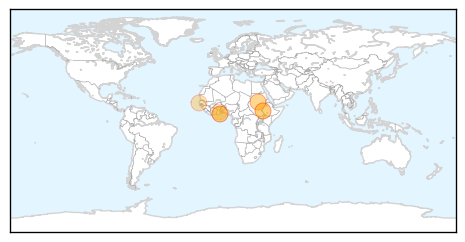
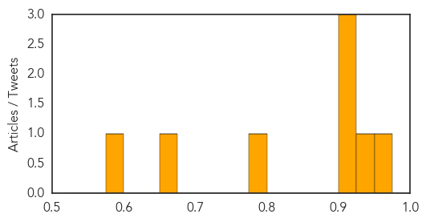
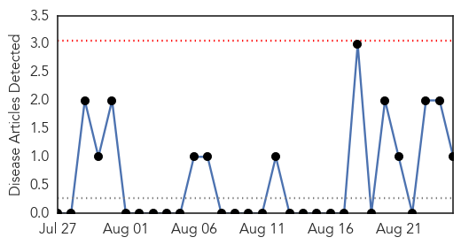
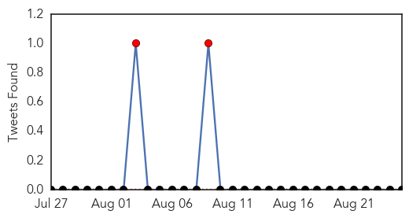

Cholera
30-Day Web Trend
1 alerts, 3 warnings
30-Day Twitter Trend
8 alerts, 0 warnings

Article Locations
Article Confidences
Top Articles:
- 0.960
- Why AMA boss is still at post?
- 0.935
- Ethiopia: South Sudanese refugees receive cholera vaccine
- 0.919
- Ethiopia: South Sudanese refugees receive cholera vaccine
- 0.916
- Ethiopia: Tens of thousands of South Sudanese refugees receive cholera vaccine
- 0.906
- Ethiopia South Sudanese refugees receive cholera vaccine
- 0.794
- Greater Accra Region outlines strategies to curb cholera
- 0.650
- Afigya-Kwabre acts to prevent cholera
- 0.577
- South Sudan: Famine in the Wake of Civil War?
Top Tweets:
-
No tweets found for Aug 25, 2014
Hemmorhagic Fever
30-Day Web Trend
0 alerts, 0 warnings

30-Day Twitter Trend
2 alerts, 0 warnings

Article Locations
Article Confidences

Top Articles:
Top Tweets:
-
No tweets found for Aug 25, 2014